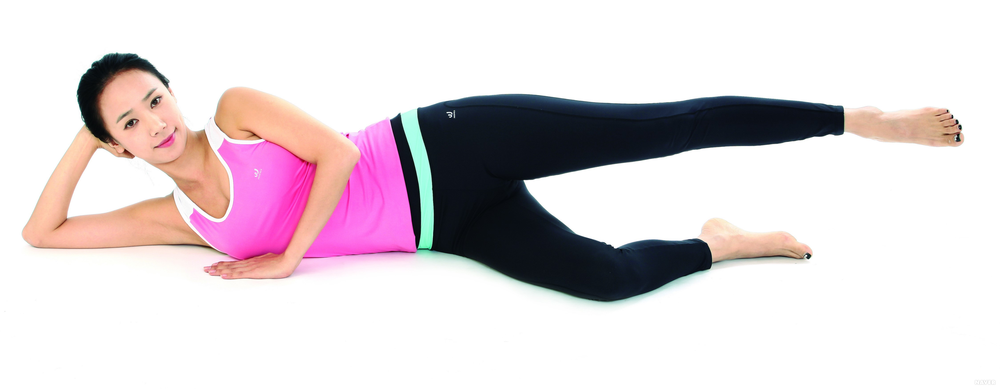
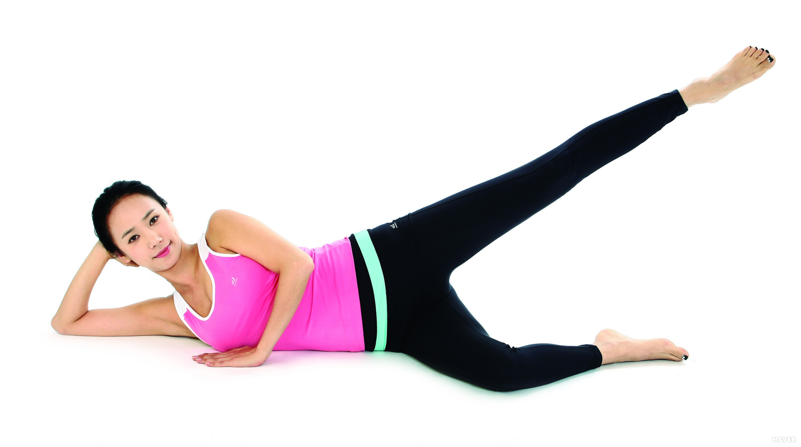

척추관 협착증 예방운동/생활습관
잘못된 자세와 생활 습관의 개선은 척추관협착증의 치료에 꼭 필요하다. 척추관협착증의 악화를 막으려면 척추의 좌우 균형을 잡아주고 근육과 인대를 튼튼하게 해주는 운동을 꾸준히 실시하는 것이 중요하다.
척추관협착증은 척수가 지나는 통로가 좁아진 상태이므로 대부분 추간판탈출증도 함께 발생하기 때문에 허리 근육이 약해져 있다. 이때 허리를 비틀면 튀어나온 디스크로 인해 더 큰 손상을 입을 수 있다. 가능한 한 무거운 물건을 들지 말아야 하고, 가벼운 물건도 바닥에 있는 것은 허리를 구부려 들지 말고 반드시 앉은 자세에서 몸과 물건을 밀착시켜 하체의 힘을 이용하여 들면서 일어나도록 해야 한다.
또 같은 자세로 오래 있는 것 또한 좋지 않다. 특히 오래 앉아 있는 것은 서 있거나 누워 있을 때보다 척추에 가해지는 하중이 훨씬 크므로, 오래 앉아서 일을 해야 하는 경우에는 자주 일어나 잠시 걷다가 다시 앉거나 틈틈이 스트레칭을 해야 한다.
[네이버 지식백과] 척추관협착증 [腰椎脊椎管狹窄症, Lumbar spinal canal] (자생한방병원 한방의학정보)예방운동
 ① 옆으로 누운 자세에서 밑에 깔린 무릎을 약간 구부려 몸의 중심을 잡는다.
② 위 쪽 다리를 들어 올렸다 내리기를 10회 반복한다.
③ 좌우 10회 반복한다.
* 주의 사항 : 엉덩이가 지나치게 뒤로 빠지지 않게 유의한다.